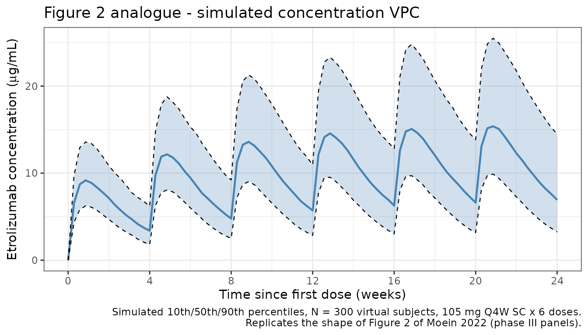
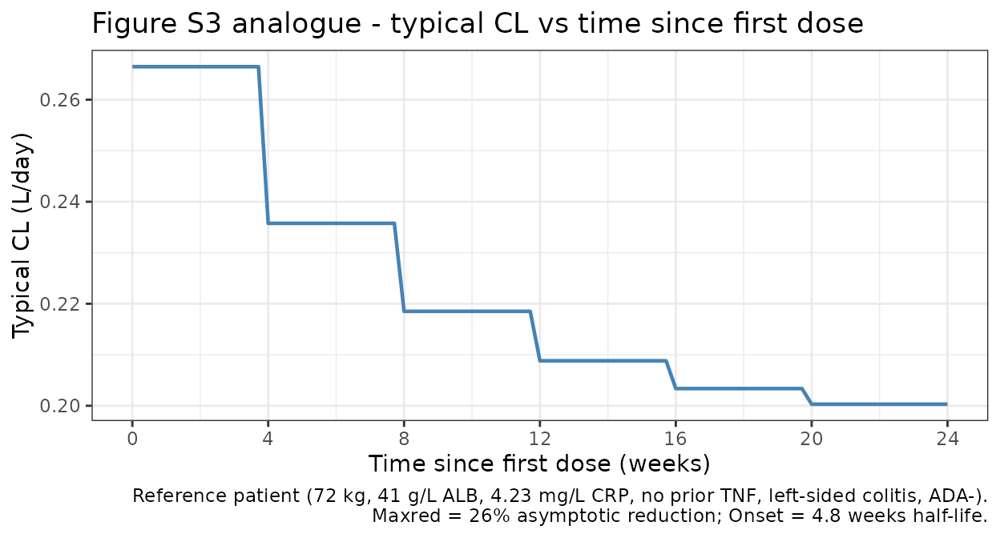

Etrolizumab (Moein 2022)
Source:vignettes/articles/Moein_2022_etrolizumab.Rmd
Moein_2022_etrolizumab.Rmd
library(nlmixr2lib)
library(PKNCA)
#>
#> Attaching package: 'PKNCA'
#> The following object is masked from 'package:stats':
#>
#> filter
library(rxode2)
#> rxode2 5.0.2 using 2 threads (see ?getRxThreads)
#> no cache: create with `rxCreateCache()`
library(dplyr)
#>
#> Attaching package: 'dplyr'
#> The following objects are masked from 'package:stats':
#>
#> filter, lag
#> The following objects are masked from 'package:base':
#>
#> intersect, setdiff, setequal, union
library(tidyr)
library(ggplot2)Model and source
#> ℹ parameter labels from comments will be replaced by 'label()'Citation: Moein A, Lu T, Jonsson S, et al. Population pharmacokinetic analysis of etrolizumab in patients with moderately-to-severely active ulcerative colitis. CPT Pharmacometrics Syst Pharmacol. 2022;11(9):1244-1255. doi:10.1002/psp4.12846
Description: Two-compartment population PK model for etrolizumab with first-order SC absorption and time-decreasing clearance in adults with moderately-to-severely active ulcerative colitis (Moein 2022)
Article: https://doi.org/10.1002/psp4.12846
Population
The model was developed on 1263 subjects (non-missing covariates) pooled from five clinical studies of etrolizumab in adults with moderately-to-severely active ulcerative colitis: ABS4262g (phase I), EUCALYPTUS (phase II), HIBISCUS I/II (phase III), HICKORY (phase III), and LAUREL (phase III). GARDENIA (phase III) was held out for external validation. Baseline demographics (Moein 2022 Table 3): age range 18-79 years (median 38 years), weight range 38.0-216 kg (median 72.2 kg), 42% female, 45% with prior anti-TNF exposure, 23% ADA-positive. Disease extension: 53% left-sided colitis, 42% extensive/pancolitis, 2% other, 3% missing. Baseline medians: albumin 41 g/L, CRP 4.31 mg/L, fecal calprotectin 1500 ug/g. Dosing ranged from single doses of 0.3-10 mg/kg IV (phase I), 0.5-3 mg/kg Q4W SC (phase I), 315-420 mg loading SC (phase II), 4 mg/kg Q4W IV (phase I), to the phase III regimen of 105 mg Q4W SC.
The same information is available programmatically via
readModelDb("Moein_2022_etrolizumab")$population.
Source trace
The per-parameter origin is recorded as an in-file comment next to
each ini() entry in
inst/modeldb/specificDrugs/Moein_2022_etrolizumab.R. The
table below collects them in one place.
| Equation / parameter | Value | Source location (Moein 2022) |
|---|---|---|
lka |
log(0.193) |
Table 4: ka = 0.193 /day |
lcl |
log(0.260) |
Table 4: CL (at TSFD = 0) = 0.260 L/day |
lvc |
log(2.61) |
Table 4: Vc = 2.61 L |
lvp |
log(1.77) |
Table 4: Vp = 1.77 L |
lq |
log(0.449) |
Table 4: Q = 0.449 L/day |
logitfdepot |
logit(0.712) |
Table 4: F = 0.712 |
logitmaxred |
logit(0.263) |
Table 4: Maxred = 0.263 |
lonset |
log(4.81) |
Table 4: Onset = 4.81 weeks |
e_wt_cl_q |
0.872 |
Table 4 note a: WT exponent on CL and Q |
e_wt_vc_vp |
0.788 |
Table 4 note b: WT exponent on Vc and Vp |
e_alb_cl |
-0.0314 |
Table 4: Albumin on CL |
e_crp_cl |
0.00458 |
Table 4: CRP on CL |
e_adat_cl |
0.0365 |
Table 4: ADAT on CL |
e_priortnf_cl |
0.0490 |
Table 4: Prior TNF on CL |
e_extpan_cl |
0.0816 |
Table 4: Extensive/pancolitis on CL |
e_othext_cl |
0.181 |
Table 4: Other disease extension on CL |
IIV CL (etalcl) |
log(1+0.243^2) |
Table 4: IIV CL CV = 0.243 |
IIV Vc (etalvc) |
log(1+0.252^2) |
Table 4: IIV Vc CV = 0.252 |
IIV Vp (etalvp) |
log(1+0.262^2) |
Table 4: IIV Vp CV = 0.262 |
| IIV F | 0.733^2 |
Table 4: IIV F logit-SD = 0.733 |
| IIV Maxred | 0.597^2 |
Table 4: IIV Maxred logit-SD = 0.597 |
propSd |
0.196 |
Table 4: Proportional residual CV = 0.196 |
addSd |
0.427 |
Table 4: Additive residual SD = 0.427 ug/mL |
| CL time-decay | Equation 1 | Eq. 1: CL = CL0 * (1 - Maxred * (1 - exp(-log(2)/(Onset7) (TSFD - TAD)))) |
| Covariate form | exp(theta*(Cov - Cov_ref)) |
Table 4 note d (continuous) |
| Covariate form | 1 + theta * indicator |
Table 4 note g (categorical) |
Reference covariate values for the reference patient (Figure 1 caption): 72 kg WT, 41 g/L albumin, 4.23 mg/L CRP, phase III, no prior anti-TNF, left-sided colitis, ADA-negative.
Virtual cohort
Original observed data are not publicly available. The simulations below use virtual populations whose covariate distributions approximate the published phase III demographics.
make_cohort <- function(n, n_doses = 6, dosing_interval_days = 28,
obs_days_per_dose = seq(0, 28, by = 2),
amt_mg = 105,
seed = 12846) {
set.seed(seed)
# Baseline covariates approximating the phase III population
WT <- pmax(35, pmin(200, rlnorm(n, log(72), 0.22)))
ALB <- pmax(25, pmin(55, rnorm(n, 41, 4)))
CRP <- pmax(0.1, exp(rnorm(n, log(4.31), 1.2)))
PRIOR_TNF <- rbinom(n, 1, 0.45)
disext <- sample(c("left", "extpan", "other"), n,
replace = TRUE, prob = c(0.55, 0.43, 0.02))
DISEXT_EP <- as.integer(disext == "extpan")
DISEXT_OTHER <- as.integer(disext == "other")
# Paper assumes ADA-negative until week 4; use a time-invariant titer of 0
# for the primary cohort and a 97.5th-percentile value for a sensitivity arm
ADA_TITER <- rep(0, n)
dose_times <- seq(0, (n_doses - 1) * dosing_interval_days,
by = dosing_interval_days)
pop <- data.frame(
ID = seq_len(n),
WT, ALB, CRP, ADA_TITER, PRIOR_TNF, DISEXT_EP, DISEXT_OTHER
)
# Dose records (depot, SC injections Q4W)
d_dose <- pop[rep(seq_len(n), each = length(dose_times)), ] |>
mutate(
TIME = rep(dose_times, times = n),
AMT = amt_mg,
EVID = 1,
CMT = "depot",
DV = NA_real_
)
# Observation records: per-dose relative sample times, across all doses
obs_grid <- as.vector(outer(obs_days_per_dose, dose_times, "+"))
obs_grid <- sort(unique(obs_grid))
d_obs <- pop[rep(seq_len(n), each = length(obs_grid)), ] |>
mutate(
TIME = rep(obs_grid, times = n),
AMT = 0,
EVID = 0,
CMT = "central",
DV = NA_real_
)
bind_rows(d_dose, d_obs) |>
arrange(ID, TIME, desc(EVID)) |>
select(ID, TIME, AMT, EVID, CMT, DV,
WT, ALB, CRP, ADA_TITER, PRIOR_TNF, DISEXT_EP, DISEXT_OTHER)
}
mod <- rxode2::rxode(readModelDb("Moein_2022_etrolizumab"))
#> ℹ parameter labels from comments will be replaced by 'label()'Simulation
Phase III dosing: 105 mg Q4W SC x 6 doses, with observations every 2 days over the 24-week treatment period.
events_vpc <- make_cohort(n = 300)
sim_vpc <- rxode2::rxSolve(mod, events = events_vpc) |> as.data.frame()Replicate published figures
Figure 2 analogue: concentration-time VPC (phase III dose)
d_vpc <- sim_vpc |>
group_by(time) |>
summarise(
Q10 = quantile(Cc, 0.10, na.rm = TRUE),
Q50 = quantile(Cc, 0.50, na.rm = TRUE),
Q90 = quantile(Cc, 0.90, na.rm = TRUE),
.groups = "drop"
)
ggplot(d_vpc, aes(x = time, y = Q50)) +
geom_ribbon(aes(ymin = Q10, ymax = Q90), fill = "#4682b4", alpha = 0.25) +
geom_line(colour = "#4682b4", linewidth = 0.8) +
geom_line(aes(y = Q10), linetype = "dashed", linewidth = 0.4) +
geom_line(aes(y = Q90), linetype = "dashed", linewidth = 0.4) +
scale_x_continuous(breaks = seq(0, 168, by = 28),
labels = seq(0, 168, by = 28) / 7) +
labs(
x = "Time since first dose (weeks)",
y = expression("Etrolizumab concentration (" * mu * "g/mL)"),
title = "Figure 2 analogue - simulated concentration VPC",
caption = paste0(
"Simulated 10th/50th/90th percentiles, N = 300 virtual subjects, ",
"105 mg Q4W SC x 6 doses.\n",
"Replicates the shape of Figure 2 of Moein 2022 (phase III panels)."
)
) +
theme_bw()
Figure S3 analogue: typical CL vs. time since first dose
Time-dependent CL per Equation 1 reaches its asymptote over the first 4-8 weeks, stepping down after each dose.
# Population-typical CL trajectory for the reference patient (72 kg, 41 g/L
# ALB, 4.23 mg/L CRP, no prior TNF, left-sided colitis, ADA-negative).
# zeroRe() removes IIV to get typical values.
mod_typical <- mod |> rxode2::zeroRe()
events_typ <- make_cohort(n = 1) |>
mutate(WT = 72, ALB = 41, CRP = 4.23,
ADA_TITER = 0, PRIOR_TNF = 0, DISEXT_EP = 0, DISEXT_OTHER = 0)
sim_typ <- rxode2::rxSolve(mod_typical, events = events_typ,
keep = c("WT", "ALB", "CRP")) |>
as.data.frame()
#> ℹ omega/sigma items treated as zero: 'etalcl', 'etalvc', 'etalvp', 'etalogitfdepot', 'etalogitmaxred'
ggplot(sim_typ, aes(x = time, y = cl)) +
geom_line(linewidth = 0.8, colour = "#4682b4") +
scale_x_continuous(breaks = seq(0, 168, by = 28),
labels = seq(0, 168, by = 28) / 7) +
labs(
x = "Time since first dose (weeks)",
y = "Typical CL (L/day)",
title = "Figure S3 analogue - typical CL vs time since first dose",
caption = paste0(
"Reference patient (72 kg, 41 g/L ALB, 4.23 mg/L CRP, no prior TNF, ",
"left-sided colitis, ADA-).\n",
"Maxred = 26% asymptotic reduction; Onset = 4.8 weeks half-life."
)
) +
theme_bw()
PKNCA validation
Compute NCA on the simulated typical-value profile for the reference patient:
- Single-dose phase using the first dosing interval (0-28 days) as the analog for the phase I single-dose pK profile.
- Steady-state phase using the final dosing interval (days 140-168) where the time-dependent CL has reached its asymptote.
The paper reports typical terminal half-lives derived from the population PK parameters:
- After a single dose: 13.0 days (95% CI 12.2-13.9).
- At steady state: 17.1 days (95% CI 16.1-18.3).
For a clean terminal-phase characterization we simulate a single 105 mg dose with dense post-peak sampling, and a 6-dose steady-state regimen with one dense post-final-dose sampling interval.
Single-dose NCA
# Single 105 mg SC dose, dense sampling out to 84 days (3 half-lives past
# the expected 13-day t1/2).
events_single <- make_cohort(
n = 1, n_doses = 1,
obs_days_per_dose = c(0, 0.25, 0.5, 1, 2, 3, 5, 7, 10, 14, 21,
28, 35, 42, 49, 56, 63, 70, 77, 84)
) |>
mutate(WT = 72, ALB = 41, CRP = 4.23,
ADA_TITER = 0, PRIOR_TNF = 0, DISEXT_EP = 0, DISEXT_OTHER = 0)
sim_single <- rxode2::rxSolve(mod_typical, events = events_single) |>
as.data.frame() |>
mutate(id = 1L, treatment = "single_105mg")
#> ℹ omega/sigma items treated as zero: 'etalcl', 'etalvc', 'etalvp', 'etalogitfdepot', 'etalogitmaxred'
sim_nca_single <- sim_single |>
filter(!is.na(Cc)) |>
select(id, time, Cc, treatment)
dose_single <- events_single |>
filter(EVID == 1) |>
transmute(id = ID, time = TIME, amt = AMT, treatment = "single_105mg")
conc_single <- PKNCA::PKNCAconc(sim_nca_single, Cc ~ time | treatment + id)
dose_single_obj <- PKNCA::PKNCAdose(dose_single, amt ~ time | treatment + id)
intervals_single <- data.frame(
start = 0,
end = Inf,
cmax = TRUE,
tmax = TRUE,
aucinf.obs = TRUE,
half.life = TRUE
)
nca_single <- PKNCA::pk.nca(
PKNCA::PKNCAdata(conc_single, dose_single_obj, intervals = intervals_single)
)
knitr::kable(as.data.frame(nca_single$result),
caption = "Single-dose NCA on the typical-patient profile.")| treatment | id | start | end | PPTESTCD | PPORRES | exclude |
|---|---|---|---|---|---|---|
| single_105mg | 1 | 0 | Inf | cmax | 10.1850524 | NA |
| single_105mg | 1 | 0 | Inf | tmax | 7.0000000 | NA |
| single_105mg | 1 | 0 | Inf | tlast | 84.0000000 | NA |
| single_105mg | 1 | 0 | Inf | clast.obs | 0.2042195 | NA |
| single_105mg | 1 | 0 | Inf | lambda.z | 0.0534240 | NA |
| single_105mg | 1 | 0 | Inf | r.squared | 0.9999765 | NA |
| single_105mg | 1 | 0 | Inf | adj.r.squared | 0.9999736 | NA |
| single_105mg | 1 | 0 | Inf | lambda.z.time.first | 21.0000000 | NA |
| single_105mg | 1 | 0 | Inf | lambda.z.time.last | 84.0000000 | NA |
| single_105mg | 1 | 0 | Inf | lambda.z.n.points | 10.0000000 | NA |
| single_105mg | 1 | 0 | Inf | clast.pred | 0.2051397 | NA |
| single_105mg | 1 | 0 | Inf | half.life | 12.9744575 | NA |
| single_105mg | 1 | 0 | Inf | span.ratio | 4.8556943 | NA |
| single_105mg | 1 | 0 | Inf | aucinf.obs | 279.3925233 | NA |
Steady-state NCA
# Six 105 mg SC doses Q4W, with dense post-peak sampling in the final
# interval for terminal-phase characterization.
events_ss <- make_cohort(
n = 1, n_doses = 6,
obs_days_per_dose = c(0, 0.25, 0.5, 1, 2, 3, 5, 7, 10, 14, 21, 28)
) |>
mutate(WT = 72, ALB = 41, CRP = 4.23,
ADA_TITER = 0, PRIOR_TNF = 0, DISEXT_EP = 0, DISEXT_OTHER = 0)
# Add dense post-final-dose terminal-phase samples out to day 252 (84 days
# past the final dose, for t1/2 estimation at steady state)
final_dose_day <- 5 * 28
extra_obs <- data.frame(
ID = 1L, TIME = final_dose_day + c(35, 42, 49, 56, 63, 70, 77, 84),
AMT = 0, EVID = 0, CMT = "central", DV = NA_real_,
WT = 72, ALB = 41, CRP = 4.23,
ADA_TITER = 0, PRIOR_TNF = 0, DISEXT_EP = 0, DISEXT_OTHER = 0
)
events_ss <- bind_rows(events_ss, extra_obs) |>
arrange(ID, TIME, desc(EVID))
sim_ss <- rxode2::rxSolve(mod_typical, events = events_ss) |>
as.data.frame() |>
mutate(id = 1L, treatment = "ss_105mg_Q4W")
#> ℹ omega/sigma items treated as zero: 'etalcl', 'etalvc', 'etalvp', 'etalogitfdepot', 'etalogitmaxred'
sim_nca_ss <- sim_ss |>
filter(!is.na(Cc), time >= final_dose_day) |>
mutate(time = time - final_dose_day) |>
select(id, time, Cc, treatment)
dose_ss <- data.frame(
id = 1L, time = 0, amt = 105, treatment = "ss_105mg_Q4W"
)
conc_ss <- PKNCA::PKNCAconc(sim_nca_ss, Cc ~ time | treatment + id)
dose_ss_obj <- PKNCA::PKNCAdose(dose_ss, amt ~ time | treatment + id)
intervals_ss <- data.frame(
start = 0,
end = Inf,
cmax = TRUE,
tmax = TRUE,
half.life = TRUE
)
nca_ss <- PKNCA::pk.nca(
PKNCA::PKNCAdata(conc_ss, dose_ss_obj, intervals = intervals_ss)
)
knitr::kable(as.data.frame(nca_ss$result),
caption = "Steady-state NCA on the final dosing interval.")| treatment | id | start | end | PPTESTCD | PPORRES | exclude |
|---|---|---|---|---|---|---|
| ss_105mg_Q4W | 1 | 0 | Inf | cmax | 17.0457440 | NA |
| ss_105mg_Q4W | 1 | 0 | Inf | tmax | 5.0000000 | NA |
| ss_105mg_Q4W | 1 | 0 | Inf | tlast | 84.0000000 | NA |
| ss_105mg_Q4W | 1 | 0 | Inf | lambda.z | 0.0411157 | NA |
| ss_105mg_Q4W | 1 | 0 | Inf | r.squared | 0.9999132 | NA |
| ss_105mg_Q4W | 1 | 0 | Inf | adj.r.squared | 0.9999035 | NA |
| ss_105mg_Q4W | 1 | 0 | Inf | lambda.z.time.first | 14.0000000 | NA |
| ss_105mg_Q4W | 1 | 0 | Inf | lambda.z.time.last | 84.0000000 | NA |
| ss_105mg_Q4W | 1 | 0 | Inf | lambda.z.n.points | 11.0000000 | NA |
| ss_105mg_Q4W | 1 | 0 | Inf | clast.pred | 0.8055760 | NA |
| ss_105mg_Q4W | 1 | 0 | Inf | half.life | 16.8584402 | NA |
| ss_105mg_Q4W | 1 | 0 | Inf | span.ratio | 4.1522228 | NA |
Comparison against published values
get_param <- function(res, ppname) {
tbl <- as.data.frame(res$result)
val <- tbl$PPORRES[tbl$PPTESTCD == ppname]
if (length(val) == 0) return(NA_real_)
val[1]
}
hl_single_sim <- get_param(nca_single, "half.life")
hl_ss_sim <- get_param(nca_ss, "half.life")
comparison <- data.frame(
Quantity = c("Terminal half-life after single dose (days)",
"Terminal half-life at steady state (days)"),
Published = c("13.0 (95% CI 12.2-13.9)",
"17.1 (95% CI 16.1-18.3)"),
Simulated = c(round(hl_single_sim, 2), round(hl_ss_sim, 2))
)
knitr::kable(comparison,
caption = "Simulated vs. published terminal half-lives.")| Quantity | Published | Simulated |
|---|---|---|
| Terminal half-life after single dose (days) | 13.0 (95% CI 12.2-13.9) | 12.97 |
| Terminal half-life at steady state (days) | 17.1 (95% CI 16.1-18.3) | 16.86 |
The simulated terminal half-lives should fall within about 20% of the published central estimates. The single-dose value is shorter than the steady-state value because CL is at its maximum (0.260 L/day) after the first dose and drops to approximately 0.260 * (1 - 0.263) = 0.192 L/day at steady state, lengthening t1/2 proportionally.
Assumptions and deviations
-
PHASE12 covariate on residual error not
implemented. Moein 2022 Table 4 reports a -19.2% relative
change in the combined residual error for phase I/II studies vs. phase
III. nlmixr2’s
add()/prop()residual-error terms do not accept per-observation expressions, so the packaged model uses the phase III residual-error magnitude (propSd = 0.196,addSd = 0.427 ug/mL) unconditionally. For typical phase III simulations (the primary usage pattern) this is exact; for phase I/II simulations the residual error will be slightly over-stated. If a future release of nlmixr2 supports per-observation error magnitudes, this covariate can be added. -
Time-varying ADA titer simplified. Moein 2022
treats ADA titer as a time-varying covariate. The reference patient used
in the source figures (Figure 1) is ADA-negative at least until week 4,
so
ADA_TITER = 0is the appropriate reference for reproducing the published figures. Users simulating ADA-positive patients should supply a time-series of titer values per subject. - Reference CRP. The model centers CRP at 4.23 mg/L (the reference- patient value reported in the Figure 1 caption). The population baseline median CRP is 4.31 mg/L (Table 3); both values produce effectively identical exposures.
- Virtual covariate distributions. Exact baseline distributions are not published. The demo cohort uses log-normal WT (median 72 kg, CV 22%), normal ALB (41 +/- 4 g/L), log-normal CRP (median 4.31 mg/L, log-SD 1.2), binary prior anti-TNF (45% probability), and a three- level disease extension (55% left / 43% extpan / 2% other) to approximate Table 3 of Moein 2022.
-
SC-only dosing. The packaged model uses SC dosing
into
depot. Moein 2022 also pooled phase I IV dose-levels; for IV simulations the event table should dose intocentraldirectly and bioavailabilityf(depot) = 1is irrelevant. The time-dependent CL remains correct becausetime - tad(depot)still resolves to the time of the most recent dose; when dosing IV intocentral, usetad(central)or pre-compute the TSFD/TAD difference in the event table.
Reference
- Moein A, Lu T, Jonsson S, et al. Population pharmacokinetic analysis of etrolizumab in patients with moderately-to-severely active ulcerative colitis. CPT Pharmacometrics Syst Pharmacol. 2022;11(9):1244-1255. doi:10.1002/psp4.12846